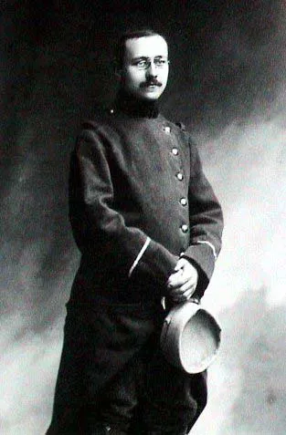
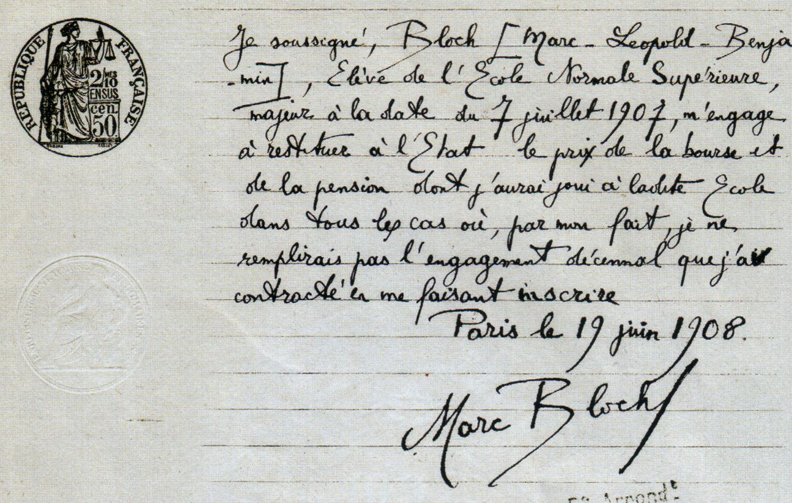
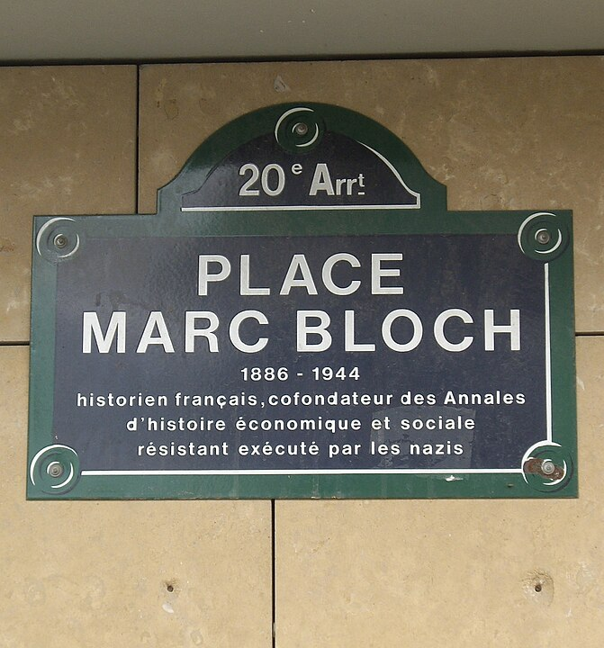
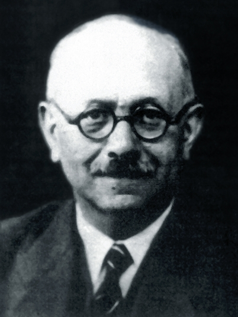
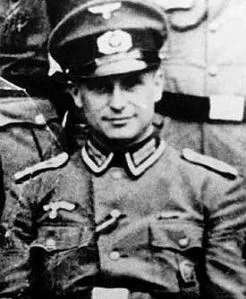
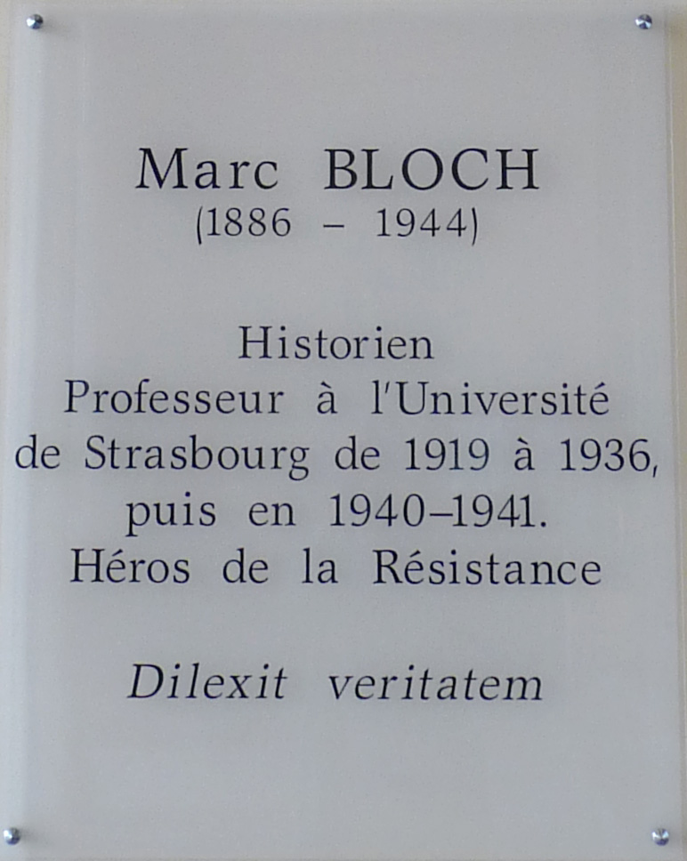
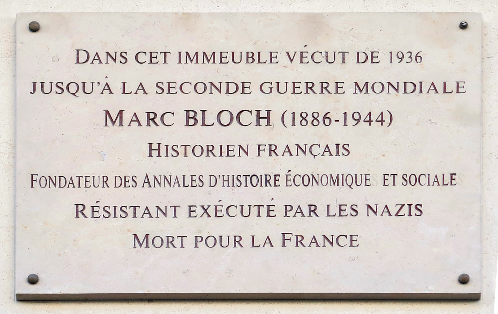
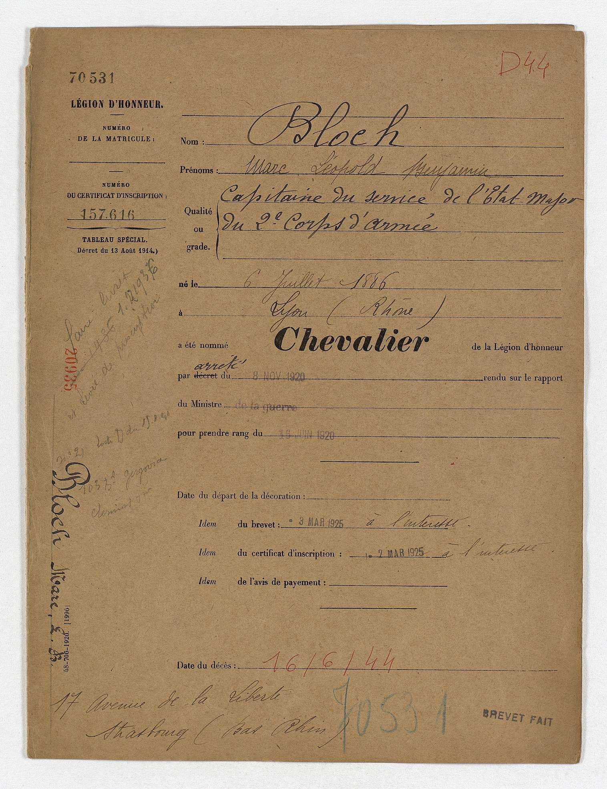
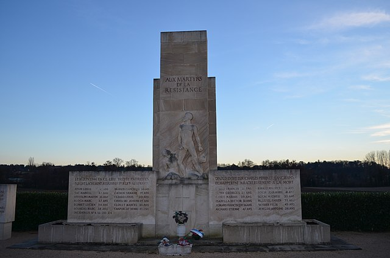

Bloch was a father, a decorated soldier, a historian, a teacher, and a leader within the résistance movements following the 1940 Nazi invasion of France. Marc Bloch was a true hero, who continued to maintain a thirst for knowledge and displayed selflessness and honor up to his very last breath. Even under brutal torture from one of the Nazi’s most notorious henchmen, Klaus Barbie, the only information Bloch gave up in the end was his own name.
Early Life
Marc Léopold Benjamin Bloch was born in Lyon, France on 6 July 1886, to Sara and Gustave Bloch. He had one brother, Louis Bloch, who was seven years his senior. According to Carole Fink, author of Marc Bloch: A Life in History, there is little known about his childhood, due to a lack of records. However, he is known to have greatly admired his older brother, Louis, who went into the field of medicine.
Fink also described Bloch’s mother, born Sara Ebstein, as an intelligent and loving woman, with talents in music, writing, and organization. Marc’s father, Gustave Bloch, was a historian, and specialized in the history of administrative policies in Rome. Although there is a lack of information on Bloch’s early life, it is clear that the family was close knit, and fostered intellectual stimulation through reading and conversation.
One of the important issues of the time was the Dreyfus Affair. This controversy is said to have had a profound impact on Bloch, who was only eight when Dreyfus was arrested for treason. Because of the injustice facing Dreyfus, Bloch believed that even apparently objective searches for the truth could become tainted. This realization helped Bloch reshape his thinking on the manner in which to analyze history.
Education and Early Career
Marc Bloch was accepted as a student to Paris’s Lycée Louis-le-Grand at age 10. He was enrolled at the institution from 1896 to 1904, and received a baccalaureate with honors in 1903. Bloch was accepted at the École Normale Supérieure in 1904, at age 18, and served in the military between 1905 and 1908, under the 76th R.I. at Fontainebleau.
He was commissioned corporal on 18 September 1906, and returned to the École Normale Supérieure in October of 1906. Bloch received a diploma in History and Geography in 1907 and an agrégation in History and Geography in 1908. From École Normale Supérieure, Bloch was accepted to the University of Berlin and the University of Leipzig, where he attended two semesters in 1909.

Bloch also spent time as a resident at the Thiers Foundation, a research library for history. It was during this period at Thiers that he published some of his first articles, between 1909 and 1912. Finally, Marc Bloch was named Professor of History and Geography at the Montpellier Lycée between 1912 and 1913. But the world was on the brink of an unimaginable war.
World War I
Marc Bloch entered World War I in August of 1914, as a sergeant in infantry. He battled typhoid in January of 1915, and was taken out of action until the following June. According to Fink, Bloch nearly died from the illness, prompting him to draw up a will on the 1st of June in 1915.
Bloch received the Croix de guerre, also referred to as the four citations, and the Légion d’honneur, or Legion of Honor. He was also considerably versatile and resilient, according to records. During the course of several years in combat, Bloch worked in reconnaissance, as an intelligence officer, and witnessed the brutality of trench warfare.
The record also shows that Bloch was critical of the professional army, in its inflexibility, lack of historical perspective, and callousness towards the troops. However, Bloch uplifted ordinary soldiers as honorable and courageous, saying he wanted to be like them in this respect. At age thirty-two, and on his birthday, 6 July 1918, Bloch received his fourth decoration, and was acknowledged as a remarkable officer.
Scholarship, Family, and the Annales
Bloch continued his career as a lecturer on the history of the Middle Ages in 1919, at the Université de Strasbourg Faculté des lettres, and married his sweetheart, Simmone Vidal, that same year. The couple had six children, who were born between 1920 and 1930: Alice in 1920, Etienne in 1921, Louis in 1923, Daniel in 1926, Jean-Paul in 1929, and Suzanne in 1930.

Bloch became an adjunct professor at Strasbourg in 1921, and was appointed to History of the Middle Ages Chair at Strasbourg in 1927. He bought a family home in the French countryside in 1930, and by 1936 he was appointed maître de conférences of economic history at the Sorbonne. He continued his career as a professor, and in 1938 he was appointed Economic History Chair at Strasbourg.
Strasbourg had one of the greatest influences on his life overall. In fact, Bloch met historian Lucien Febvre in Strasbourg. It was Febvre who co-founded the Annales School, or Annales, along with Bloch. The two scholars became quite close, as they shared similar interests and sensibilities.
World War II and Strange Defeat
Bloch was mobilized for World War II on 23 August 1939. The professor was fifty-three years of age when he was called upon to participate in a world war for the second time. Bloch worked within the intelligence community alongside British agents, though he did not enjoy the work and was critical of its shortcomings and failures.
This criticism was made apparent in Bloch’s unfinished work, Strange Defeat; a Statement of Evidence Written in 1940, published as L’Étrange Défaite after his death in 1946. Bloch focused his complaints on French leadership and disorganization as the main cause of defeat.

Between May and June of 1940, Bloch participated in the northern campaign, and was forced to escape to England for safety. He moved back to France to find that the college at Strasbourg had moved to Clermont-Ferrand. As a Jewish descendent under Nazi occupation in France, Bloch was allowed to work under special conditions of the law, which took into account knowledge or expertise on a case-by-case basis.

The Resistance
In November of 1942, Bloch and his family were forced to leave Montpellier, and the Blochs relocated to Fougères. Bloch continued to write, and by 1943 he went underground, representing Franc-Tireur and other résistance groups out of Paris and Lyon.
Bloch continued to work toward insurrection. According to biographer Carole Fink, there were long periods of unaccustomed solitude. Bloch spent his fifty-seventh birthday alone. Through contacts he anxiously followed the fate of his two exiled sons, from their long internment in a Spanish prison camp to their release and escape to Free French forces in North Africa.

While in Lyon, Bloch used the false identity of Maurice Blanchard, and not only carried out localized plans for the résistance, but also made local preparations for D-Day. Bloch was arrested by the Gestapo under this false name on 8 March 1944. Klaus Barbie, who earned the reputation of the Butcher of Lyon, personally interrogated and tortured Marc Bloch.
On 16 June 1944, he and 29 others were taken from their cells and driven 30 kilometers at night. They were led out by the roadside and shot to death near the village of Saint-Didier-de-Formans at about 9:00 o’clock. Simmone Bloch, whose health was in increased decline after her husband’s arrest, died shortly after, on 2 July 1944.

Legacy
Marc Bloch’s legacy goes well beyond the Annales, or today’s Marc Bloch University, also known as Strasbourg II and UMB in France. Marc Bloch encouraged historians and other intellectuals to find alternative ways to evaluate and interpret history.
Bloch explains this idea best in the introduction to his last unfinished work, Apologie pour l’histoire, published after his death as The Historian’s Craft, stating that history is an endeavor toward better understanding and, consequently, a thing in movement.

Bloch was not only revolutionary as a résistance leader, but he was also revolutionary as an intellectual thinker. He argued for further analysis of historical events and evidence, and he hoped for a more integrated world, based on cooperation and understanding. Marc Bloch is undoubtedly one of the most overlooked heroes of the 20th century. He forever changed the way history is perceived, redefining what it means to be a historian.


Selected Bibliography
Website
- Dash, Mike. “History Heroes: Marc Bloch.” Smithsonian. Accessed April 15, 2016. Smithsonian article .
Periodical
- Weber, Eugen. “About Marc Bloch.” The American Scholar 51, January 1, 1982. Accessed April 15, 2016.
Scholarly Books
- Bloch, Etienne. Marc Bloch: 1886–1944, Une Biographie Impossible = An Impossible Biography. Limoges: Culture Et Patrimoine En Limousin, 1997.
- Fink, Carole. Marc Bloch: A Life in History. Cambridge: Cambridge University Press, 1989.
- Jackson, Julian. The Fall of France: The Nazi Invasion of 1940. Oxford: Oxford University Press, 2003.
Primary Sources
- Bloch, Marc. Strange Defeat; a Statement of Evidence Written in 1940. New York: Octagon Books, 1968.
- Bloch, Marc. The Historian’s Craft. New York: Knopf, 1953.